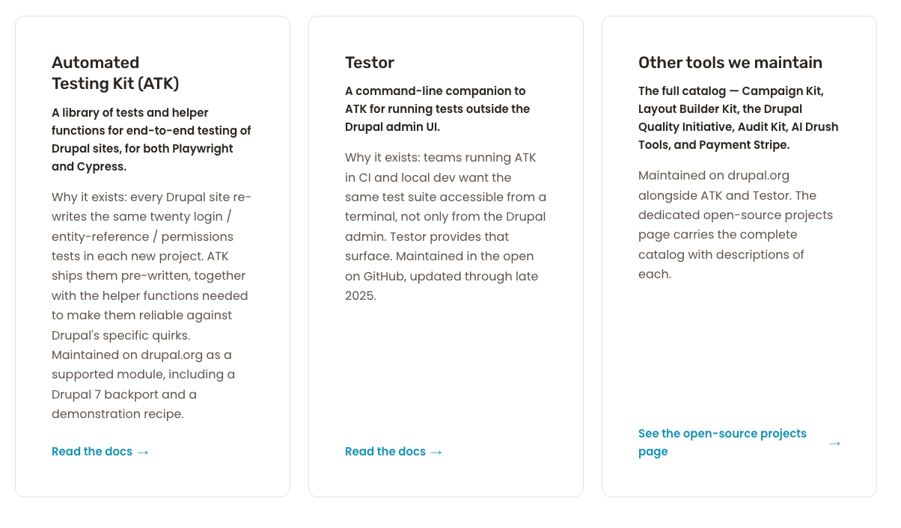
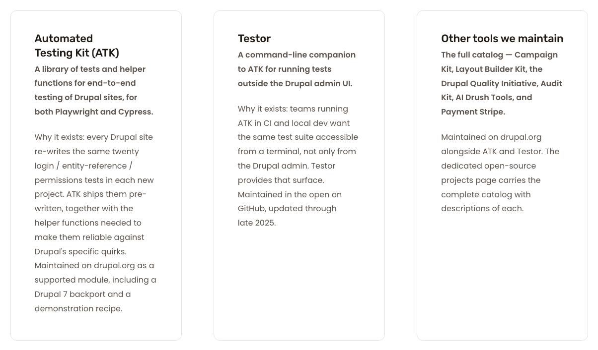
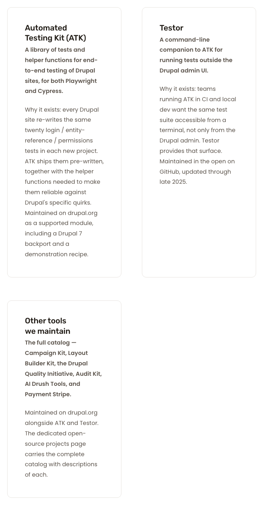

/about-us card-canvas outer padding.project-card, live applies it on the inner .card__bottom which fills the entire card interior. Pixel-equivalent on screen.getComputedStyle across all 7 cards confirms the same .card__bottom { padding: 3rem } rule applies). 1280 gestalt capture confirms.Measured via Playwright's getBoundingClientRect() on the rendered DOM. "Inset" = distance from card outer border edge to the first non-empty text node inside the card.
| Viewport | Source | Left inset | Top inset | Right inset | Border | Outer padding | Inner (.card__bottom) padding |
|---|---|---|---|---|---|---|---|
| 1280×800 | Live | 49.0 px | 49.0 px | 49.0 px | 1 px | 0 px | 48 px |
| 1280×800 | Preview | 49.0 px | 49.0 px | 49.0 px | 1 px | 48 px | — |
| 768×1024 | Live | 49.0 px | 49.0 px | 49.0 px | 1 px | 0 px | 48 px |
| 768×1024 | Preview | 49.0 px | 49.0 px | 49.0 px | 1 px | 48 px | — |
| 375×667 | Live | 49.0 px | 49.0 px | 49.0 px | 1 px | 0 px | 48 px |
| 375×667 | Preview | 49.0 px | 49.0 px | 49.0 px | 1 px | 48 px | — |
Verdict on inset: exact parity at every viewport. F's no-op claim is empirically confirmed by independent pixel measurement.
Wipe-slider compares the §C card-grid region of /about-us live (left of slider) against the preview's same region (right). Drag the handle to reveal the underlying image.


Region AE (fuzz 2%): 108,811 px = 0.128% × area — concentrated in card copy / link text differences, NOT in cadence. Diff PNG · Side-by-side

Region AE: 114,963 px = 0.108% × area. Note: live keeps 3-up at 768; preview drops to 1-up. That is grid-layout behaviour, not padding. The per-card inset still measures 49 px on both. Diff PNG · Side-by-side
Region AE: 106,660 px = 0.145% × area. Both stack 1-up. Inset 49 px on both. Diff PNG · Side-by-side
| Section / row | Viewport | Status | Description |
|---|---|---|---|
| Open source §C cards (Cycle 1 DELTA row) | 1280 | MATCH | Content-to-border inset 49 px on both. Structural source differs (inner padding vs outer padding) but visually identical. |
| Open source §C cards (Cycle 1 DELTA row) | 768 | MATCH | Inset 49 px on both. Grid count differs (live 3-up, preview 1-up) but that is a separate layout decision out of scope here. |
| Open source §C cards (Cycle 1 DELTA row) | 375 | MATCH | Inset 49 px on both. Both stack 1-up. |
| OSS sibling page card grid (gestalt) | 1280 | MATCH | F's getComputedStyle on all 7 OSS cards: padding 48 px on .card__bottom, identical to /about-us. Gestalt screenshot confirms. |
| Homepage / /services / /how-we-do-it (no-regression) | — | 200 | No code changed; all pages return 200; L5 rule (.card__bottom { padding: 3rem }) still served. |
/ -> 200
/about-us -> 200
/services -> 200
/open-source-projects -> 200
/how-we-do-it -> 200
L5 served: .card[class*="theme"] .card__bottom { padding: 3rem; /* 48px */ }
F's handoff flagged a pre-existing tension: the design brief specifies 32 px card internal padding (lines 335 / 355 / 488) while the preview and live both use 48 px. This pre-dates Sprint 12 (established Sprint 5 Cycle 2 with explicit audit justification). Per the cycle prompt this is logged to follow-up backlog FB-8 and is not acted on here. Live (48 px) matches preview (48 px). That is the binding spec for Cycle 4.
PASS — NO-OP VERIFIED. F's no-op resolution is correct: the 48 px cadence is already empirically achieved via Sprint 5 Cycle 2's .card__bottom { padding: 3rem } rule. Pixel-level measurement at three viewports confirms 49 px content-to-border inset on both live and preview. Cycle 1's "Open source §C cards" DELTA row flips to MATCH at 1280 / 768 / 375. O may close the cycle and merge.
{kind=link}
{kind=link}
{kind=link}
{kind=link}
{kind=link}
{kind=link}